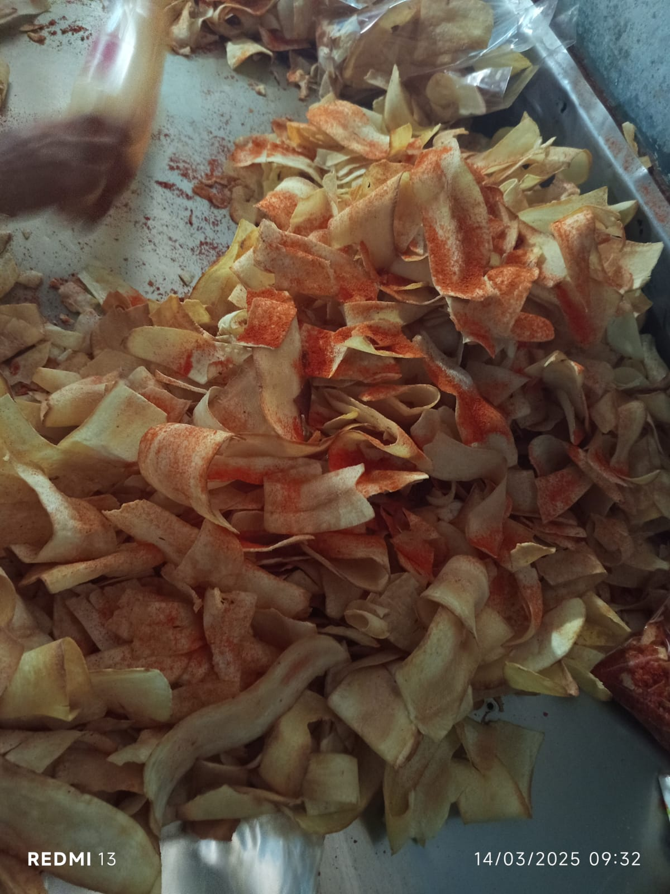
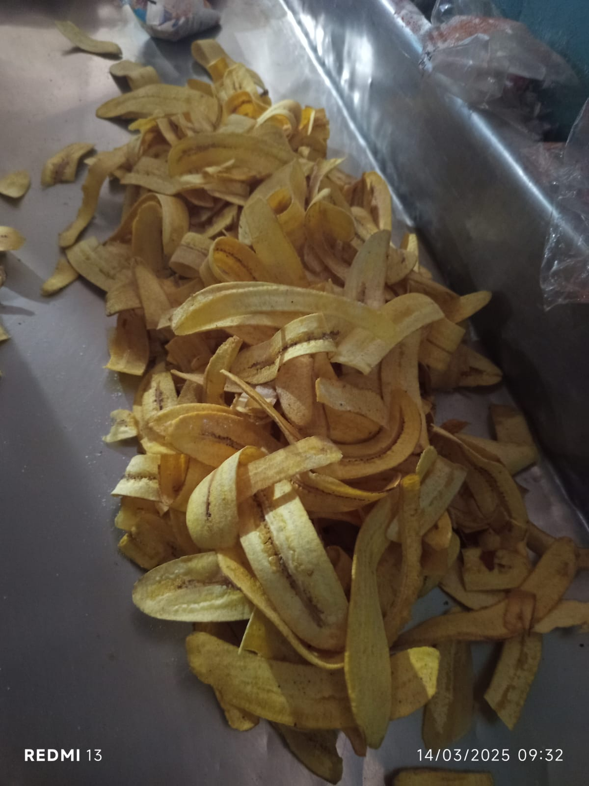
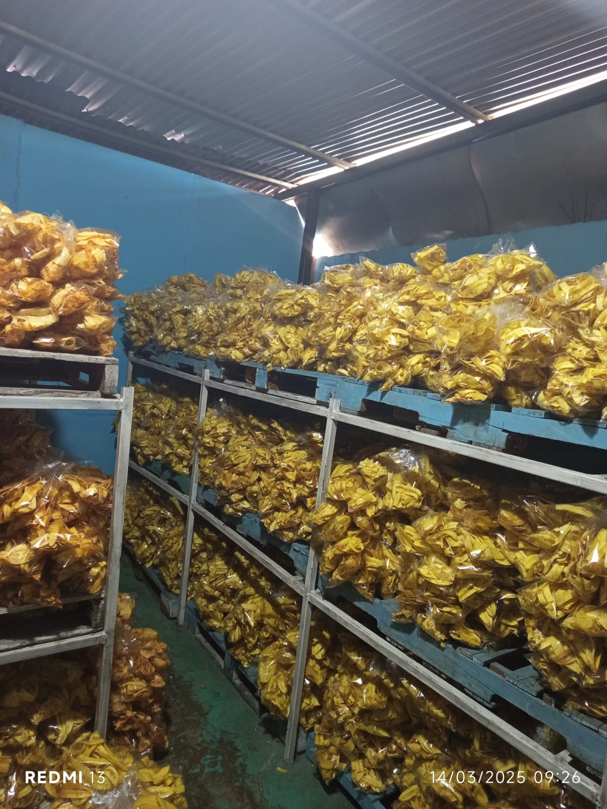
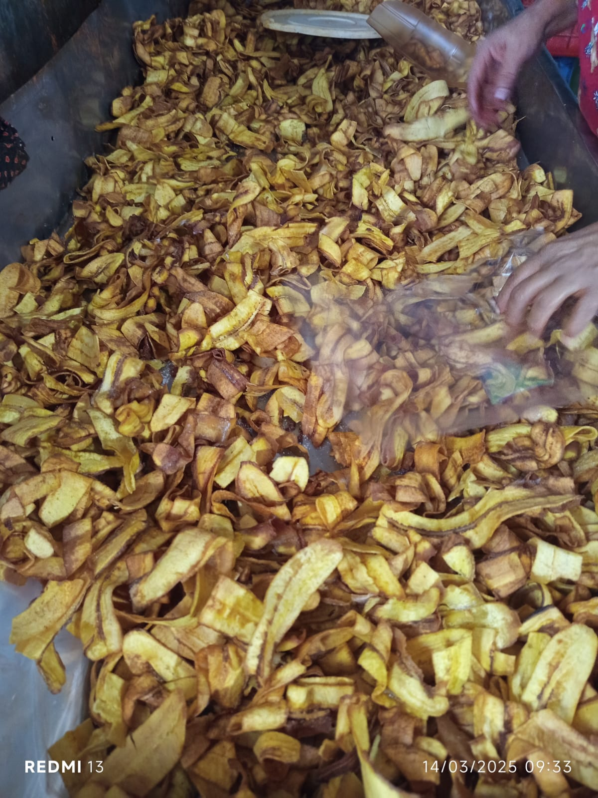

Ubicada en el municipio de Jinotepe, específicamente en el barrio Román Esteban, la microempresa La Meseta es un negocio en constante crecimiento, fundado a principios del año 2016 por los hermanos José Selva y Reyes Selva.
El negocio comenzó con una inversión modesta, enfocándose en la producción y comercialización de productos locales. Con el tiempo, ha logrado consolidarse en el mercado gracias a su compromiso con la calidad y la satisfacción del cliente. La empresa ha ido diversificando su catálogo, adaptándose a las necesidades y preferencias del público.
Además, La Meseta ha establecido alianzas estratégicas con proveedores y distribuidores locales, lo que le ha permitido expandir su alcance dentro de Jinotepe y otros municipios cercanos.
Uno de los pilares fundamentales de la empresa es el impacto social. Desde su fundación, ha generado empleo para decenas de personas, brindando oportunidades de desarrollo y capacitación a sus trabajadores. Además, ha participado en iniciativas comunitarias, apoyando eventos locales y promoviendo el consumo de productos nacionales.
La empresa se especializa en la producción y comercialización de productos de alta calidad. Entre sus principales líneas de negocio se incluyen:

Yuca barbacoa

Plátanos con sal

Plátanos con limón

Maduro
Con una base sólida y un compromiso con la innovación, La Meseta planea expandir su mercado a nivel regional y nacional. La empresa está explorando nuevas estrategias de comercialización, incluyendo la venta en línea y la participación en ferias comerciales para dar a conocer sus productos a una audiencia más amplia.
Una de las visiones principales de La Meseta es expandir aún más su negocio con el objetivo de generar mayores ventas y empleo. Los hermanos Selva buscan implementar nuevas tecnologías en sus procesos de producción y mejorar la distribución de sus productos a nivel nacional. Además, están en la búsqueda de nuevas oportunidades de inversión y colaboración con otras empresas para fortalecer su presencia en el mercado.
Los esfuerzos de La Meseta no solo están dirigidos a su crecimiento económico, sino también a su impacto positivo en la comunidad. A través de su expansión, la empresa espera seguir contribuyendo al desarrollo local y ofreciendo productos de calidad a un público cada vez más amplio.